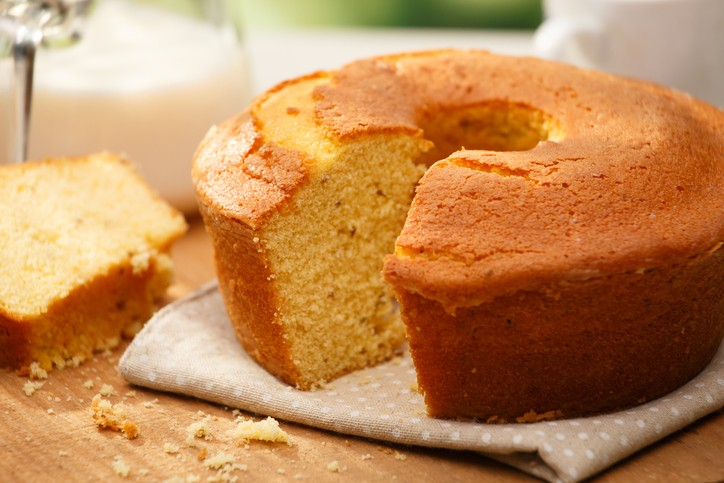

Bolo de Fúba

INGREDIENTES:
- 3 ovos
- 2 xícaras de açúcar
(xícara de chá)
- 3 colhres rasas de farinha de trigo
(colher de sopa)
- 1/2 de óleo
(copo americano)
- 1 copo de leite
- 1 colher de fermento em pó
(colher de sopa)
MODO DE PREPARO:
- Bata todos os ingredientes no liquidificador
- Coloque em uma forma untada e enfarinhada
- Leve ao forno preaquecido e deixe assar, por cerca de 40 minutos